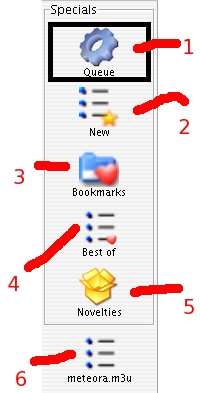

This view simply displays all available playlists. It features special playlists (Queue, Bestof, New, Bookmarks and Novelties) and regular ones. Physical Playlist Repository view only shows playlist files and Logical Playlist Repository only shows logical playlists (one playlist can map several playlist files). Further information about playlists on the Using Playlist page.

Fig
01: the Playlist Repository view
1- Queue Playlist: display tracks to be played
2- New Playlist: void at startup, use it to create new playlists. Drag & drop inside from tree or table views to add tracks.
3- Bookmarks playlist: drag and drop track inside to quickly access your favorite tracks.
4- Best of playlist: contains your collection favorite tracks.
5 - Some regular playlist (.m3u files).
Queue playlist
Save as: Save current queue.
New playlist
Play: Stop current track and play this playlist.
Save as: Save this new playlist as a regular playlist. It needs a refresh to make it appear in the repository.
Bookmarks playlist
Play: Stop current track and play this playlist.
Save as: Save this new playlist as a regular playlist. It needs a refresh to make it appear in the repository.
Best of playlist
Play: Stop current track and play this playlist.
Save as: Save this new playlist as a regular playlist. It needs a refresh to make it appear in the repository.
Novelties
Play: Stop current track and play this playlist.
Save as: Save this new playlist as a regular playlist. It needs a refresh to make it appear in the repository.
Regular playlists
Play: Stop current track and play this playlist.
Delete: Physically delete this playlist file or all related playlist files it is a logical playlist.